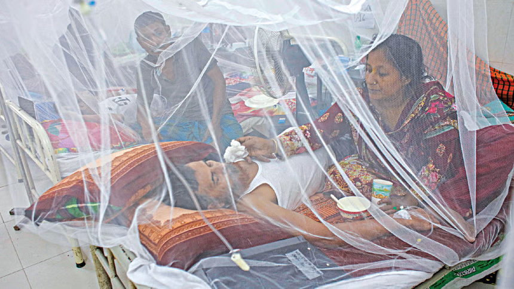

Dengue cases has surpassed the three lakh mark this year

20 November 2023
With just 10 days remaining in November, the number of dengue cases has surpassed the three lakh mark this year. Contrary to the usual trend of declining cases with the onset of winter, the addition of 1,291 new cases brings the total for the year to 3,01,255.
With six deaths due to dengue yesterday, the DGHS reported a total of 1,549 dengue-related deaths so far this year.
Mohammad Khalilur Rahman, former chief entomologist at DHGS, said dengue can be controlled in many ways, which includes vector management and reducing aedes breeding sources.
Mosquito control activities were not done properly, which is one of the main causes of the continued rise of dengue cases this year.
— GM Saifur Rahman Assistant professor at National University
But the steps of authorities concerned in this regard are not satisfactory, he said.
As long as the temperature does not fall to 15-16 degree Celsius, the number of cases will not fall this year, he added.
Prof Kabirul Bashar, an entomologist at Jahangirnagar University, said since dengue has now spread to unions, local government bodies will have to be prepared to curb the aedes mosquito population.
Equipment, logistics, manpower, and necessary training will be required in this regard. Dengue is no longer a seasonal fever, rather a year-round problem, he said.
Bashar added that recent rain will increase breeding sources. He advised the government to start destroying aedes breeding sources immediately to control dengue next year.
Authorities will have to conduct door-to-door drives, with cooperation from city's health workers, once every 15 days. They should also impose a fine if they find breeding sources after visiting a house for the third time, Bashar noted.
The reasons for year-round dengue are climate change, multi-story buildings (where cars are kept and washed), a huge number of under-construction buildings, and preserving water in drums or buckets, he shared.
Bashar said certain areas of Dhaka have water shortages and residents store water in buckets or drums, contributing to year-round outbreaks.
Those who store water in buckets should wash them weekly with detergent to prevent mosquitoes from breeding. Underground parking spots in the buildings should be kept clean, he advised.
GM Saifur Rahman, assistant professor of medical and applied entomology at the National University in Gazipur, said, "Mosquito control activities were not done properly, which is one of the main causes of the continued rise of dengue cases this year."
Authorities failed to take necessary steps during lean periods (November-April), which are vital to control dengue, Saifur shared.
"The absence of surveillance and initiating necessary steps outside Dhaka, especially in district towns, led to the rising infections this year," he said.
Saifur advised authorities to ensure effective surveillance to identify dengue hotspots, as it will enable local government departments, community organisations, and educational institutions to conduct targeted interventions.